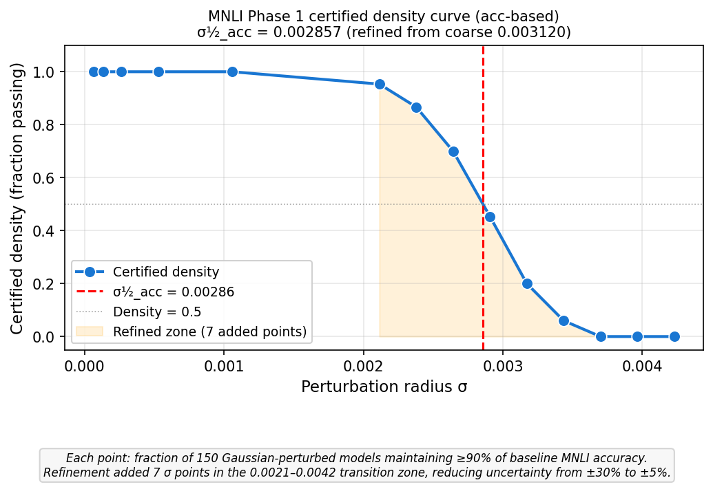
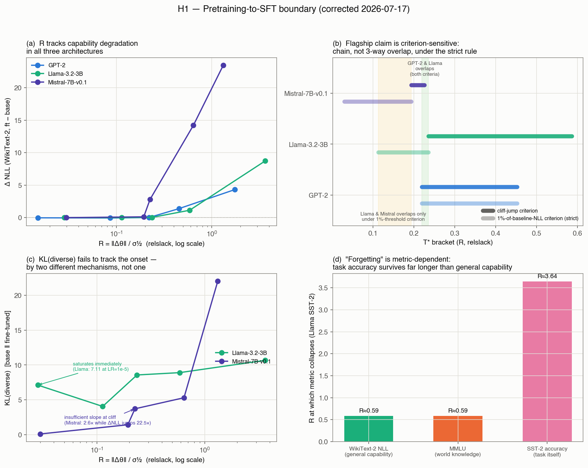
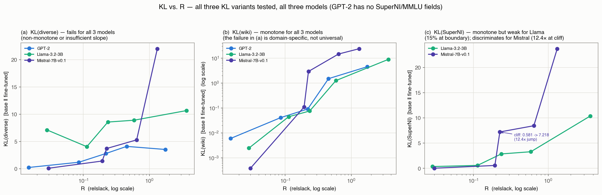
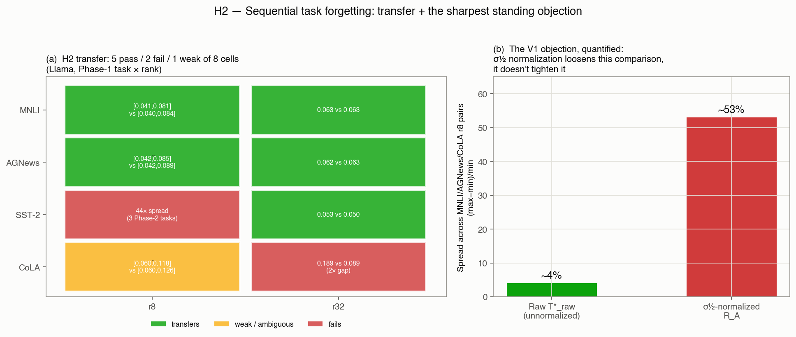
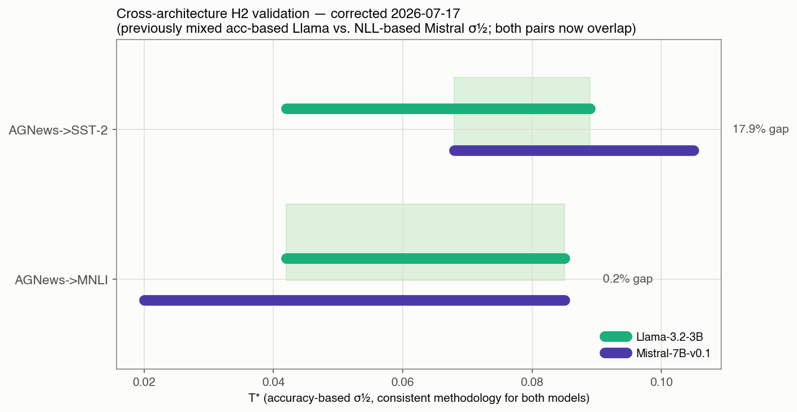
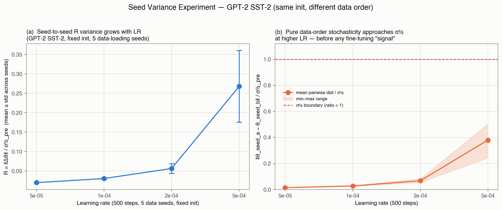

Core idea: Compute σ½ once from a Phase 1 checkpoint.
Normalize weight displacement during Phase 2 training: R_A = ‖Δθ‖ / σ½_A.
When R_A crosses threshold T*, Phase 1 is forgotten — predictable before running Phase 2,
at least in the one setting where this pre-run property has actually been tested (transfer across
Phase-2 targets for a fixed Phase-1 checkpoint). See §6 for where σ½ demonstrably earns its keep
and where raw displacement alone would have done just as well.
Research Pipeline. σ½_A is computed once from the Phase 1 checkpoint — before Phase 2 begins. During Phase 2 training, the normalized displacement R_A = ‖Δθ‖/σ½_A grows. When R_A crosses T*, Task A is forgotten. T* itself is empirically calibrated (not a universal constant — R_A=1 does not mark the threshold; see §2/§6), and the "known before Phase 2" property has only been demonstrated as a transfer claim: calibrate T* once against one Phase-2 target, and it predicts forgetting for a different, untested Phase-2 target — not as a zero-shot universal law.
R predicts pretraining knowledge degradation (NLL + MMLU) better than KL(diverse) in GPT-2, Llama-3.2-3B, and now Mistral-7B-v0.1 (60× parameter range). Raw displacement at forgetting onset spans 39–44× across architectures; σ½ compresses this to ~3×. But the flagship "3-way overlap" depends on which break-criterion is used — see §2.
MNLI, AGNews, CoLA Phase 1 (Llama): T* is largely Phase-2-independent. SST-2 Phase 1: T* spans 44× across 3 Phase-2 tasks — anisotropic, rank-dependent, still mechanistically unexplained. New: Mistral-7B cross-architecture validation, now on a consistent accuracy-based σ½ for both models — see §6.
Corrected this session (2026-07-17) 5 FIXES
1) GPT-2/Llama H1 tables were citing a stale, non-relslack σ½ (12×/1.34× off). 2) Mistral MNLI σ½ was on a different convention than Mistral SST-2 v5 (17% off). 3) A "Key Numbers" row cited superseded Mistral SST-2 v3 instead of v5 PRIMARY. 4) The flagship SST-2 3-way convergence claim is criterion-sensitive — not a clean overlap under the stricter rule. 5) The H2 cross-architecture comparison mixed an accuracy-based Llama σ½ against an NLL-based Mistral σ½ — now recomputed consistently.
Confirmed live tooling bug STILL PRESENT
Both h2_sequential_llama.py and recompute_sigma_half_acc.py print "Forgot?" based on R_A > 1.0, not the actual accuracy threshold. Confirmed live in this session's Mistral rerun: prints "no" for rows where accuracy had collapsed from 0.90 to 0.24–0.26. Underlying JSON is correct; the console/plot display is not. See §9.
1The Core Concept: σ½ as a Basin Radius
σ½ is computed by adding Gaussian noise at increasing amplitude σ to the Phase 1 weights and measuring how quickly the model's evaluation metric degrades. σ½ is the σ at which certified density drops to 0.5 — i.e., the model retains ≥ 50% of its success probability under perturbations of radius σ½. Think of it as the radius of the "safe zone" around the Phase 1 weight vector.
R_A = ‖Δθ‖ / σ½_A — weight displacement during Phase 2, normalized by Phase 1 basin radius.
T* is the R_A value where forgetting begins. If you know T* before Phase 2 runs, you can set an early-stopping budget — but only in the sense that T* transfers from a different, previously-tested Phase-2 target, not that it can be derived from σ½ alone without ever observing a forgetting event.
Fig: Weight-space basin geometry. The Phase 1 optimum θ_A* sits at the center. The large dashed circle (radius σ½) is where isotropic random noise would cause forgetting — this is what randomized smoothing certifies. The small solid circle (radius T*·σ½) is where gradient-directed fine-tuning actually causes forgetting, well inside the certified region. Caveat added 2026-07-17: this diagram illustrates why R_A ≪ 1 at forgetting (real and confirmed), but it does not by itself establish that σ½-normalization is the right lens — see §5 for the finding that, within a single architecture, raw (unnormalized) displacement at T* is more consistent across Phase-1 tasks than the σ½-normalized version is.

Fig 1. Certified density curves (illustrative — Llama-only batch). σ½ (vertical dashed line) is where density = 0.5. SST-2 Phase 1 has the largest basin (σ½=0.003337); pretrained Llama has the smallest (σ½=0.000772) among the values shown here — finer-tuned tasks settle into tighter minima. Kept as a conceptual illustration of what a density(σ) curve looks like; the claim-bearing figures (Figs 2–5 below) were regenerated 2026-07-17 with corrected relslack σ½ and the Mistral data.
σ½_pre — Pretrained Llama (relslack)
0.000772
σ½_pre — Pretrained Mistral-7B (v5, relslack)
0.000182
σ½_A — MNLI / AGNews Phase 1 (acc)
0.00286 / 0.00276
σ½_A — SST-2 / CoLA Phase 1 (acc)
0.00334 / 0.00194
2H1 — Pretraining→Fine-Tuning Boundary
R = ‖Δθ‖/σ½_pre discriminates safe from degraded fine-tuning at the pretraining boundary, better than KL on instruction-domain prompts (KL-diverse), across GPT-2 (117M), Llama-3.2-3B (3B), and Mistral-7B-v0.1 (7B) — a 60× parameter range.

Fig 2. Regenerated 2026-07-17 from corrected relslack σ½ for all three models. (a) R tracks ΔNLL in GPT-2, Llama-3.2-3B, and Mistral-7B-v0.1. (b) The criterion-sensitivity finding: cliff-jump vs. 1%-threshold brackets for each model — GPT-2∩Llama and Llama∩Mistral each overlap, but GPT-2∩Mistral does not under the strict rule. (c) KL(diverse)'s two distinct failure modes (Llama saturates; Mistral has insufficient slope at the cliff). (d) Metric-dependence: NLL and MMLU collapse at the same R (≈0.59); SST-2 task accuracy survives to R≈3.64.

Fig 2b. The full KL-vs-R picture (new 2026-07-17) — all three KL variants tested, across all three models where the field exists (GPT-2 has no SuperNI/MMLU fields). (a) KL(diverse), the natural competing baseline, fails for all three models — GPT-2 included, not just Llama and Mistral. (b) KL(wiki), on the pretraining domain itself, is monotone for all three models — confirming the failure in (a) is domain-specific (instruction-style prompts are OOD for the base model), not a general KL failure. (c) KL(SuperNI) is monotone for both Llama and Mistral but only Mistral's shows a real cliff-discriminating jump (12.4×); Llama's moves only 15% at the same boundary where ΔNLL jumps 32×.
Per-model T* (relslack σ½, corrected 2026-07-17)
lr
GPT-2 R
Llama R
Mistral R (v5)
1e-5
0.015
0.028
0.030
5e-5
0.086
0.113
0.194
1e-4
0.220
0.236
0.226
2e-4
0.453
0.586
0.642
5e-4
1.741
3.641
1.320
⚠️ These Llama R values were previously wrong in this file (0.038 / 0.316 / 0.784 / 4.877 — the same "stale non-relslack σ½" bug found and fixed in RAW_DATA.md and SUMMARY.md this session). Corrected table above uses Llama's own relslack σ½=7.717391×10⁻⁴.
Cross-model T* — two ways of defining "broken", two different answers
†Mistral's strict-criterion lower bound (R=0.030) is lr=1e-5, where SST-2 accuracy is 0.480 — the task did not converge. Excluding this non-converged point (consistent with how the cliff-jump analysis already treats it), Mistral has no valid safe reference point in the tested LR grid at all — a genuine gap, not a resolved number.
The flagship "3-way convergence" claim is criterion-sensitive. Under the loose cliff-jump rule, GPT-2 and Mistral overlap directly at [0.220,0.226] and Llama's lower bound is adjacent — a narrow but real 3-way band near R≈0.19–0.24. Under the stricter 1%-of-baseline-NLL rule (the same rule that correctly resolved the MNLI comparison below), the brackets form a chain, not a 3-way overlap: GPT-2∩Llama=[0.220,0.236] ✓, Llama∩Mistral=[0.113,0.194] ✓, but GPT-2∩Mistral = ∅ — no common R value. What's robust either way: raw displacement spans 39–44× across architectures and σ½ compresses this to roughly a 3× band. What's not robust: a precise, simultaneous 3-way overlap. Closing the Mistral LR gap (testing lr=2e-5 or 3e-5) would settle this.
MNLI fine-tuning converges more cleanly than SST-2 does. After correcting both models to relslack σ½ and using the strict 1%-threshold criterion consistently: Llama MNLI T*=[0.133, 0.233]; Mistral MNLI T*=[0.071, 0.324]. Llama's bracket sits entirely inside Mistral's — the cleanest cross-architecture result in the H1 dataset, and one that only emerged after fixing a real staleness bug in Mistral's σ½ (it had been on a different, non-relslack convention than Mistral's own SST-2 v5 result — 17% off).
✓ Confirmed finding
KL(diverse) fails to track the safe/forget boundary in all three models, by two different (not identical) mechanisms: Llama saturates immediately (7.11 at LR=1e-5, near its own ceiling); Mistral doesn't saturate (starts at 0.088) but has insufficient slope at the actual cliff (2.6× change while ΔNLL jumps 22.5×).
⚠ Metric-dependent, not universal
"Forgetting" onset depends on which metric you track. Llama SST-2 task accuracy survives to R≈3.6 while NLL/MMLU have already collapsed by R≈0.24–0.59 for the same fine-tune. R predicts general-capability degradation specifically, not one universal collapse point.
Two open validity questions, neither resolved:
(1) σ½ is computed by perturbing the entire decoder block (attention + MLP + layernorms), but LoRA fine-tuning only ever moves attention-projection weights. This scope mismatch between what's certified and what's displaced could bias σ½ in an architecture-dependent way (different MLP:attention ratios) and has never been tested — the fix (recompute σ½ restricted to the LoRA target modules) is cheap.
(2) hessian_eigenvalue.py exists to test whether σ½ ∝ 1/√λ_max, i.e. whether the checkpoint sits in a genuine curvature basin. Its own docstring notes pretrained checkpoints are "often" at saddle points w.r.t. target parameters — which would undermine the "certified basin radius" framing if true. Never run to completion (no results.json).
σ½_A, computed once from a Phase 1 checkpoint, defines a forgetting budget R_A. For isotropic Phase 1 tasks (MNLI, AGNews, CoLA), T* is largely Phase-2-independent — a Phase 1 model property. For SST-2 Phase 1 (anisotropic), T* varies 44× depending on Phase 2 task direction, and the failure pattern is rank-dependent in a way that isn't fully explained (§4).
Methodological note: every T*=[a,b] below is the interval between the last tested LR that stayed safe and the next that forgot — a grid-resolution bracket, not a statistical CI (no repeated sampling except where noted). "Pass"/"overlap" below means the transition lands in the same or adjacent tested LR step, not a formal equivalence test.

Fig 3. Regenerated 2026-07-17. (a) The exact 8-cell transfer count (4 Phase-1 tasks × 2 ranks, all Llama-3.2-3B): 5 pass (green), 2 fail (red — SST-2 r8, CoLA r32), 1 weak/ambiguous (amber — CoLA r8). (b) Panel (b) previews the sharpest objection detailed in §5: raw T*_raw spread (~4%) vs. σ½-normalized R_A spread (~53%) across the same MNLI/AGNews/CoLA r8 pairs.
T* Summary — All Phase 1 Tasks (exact cell count, not just "3 of 4")
Phase 1 Task
Rank
T*(Phase 2 A) vs T*(Phase 2 B)
Transfer?
MNLI
r8
[0.041,0.081] (→SST-2, 5-seed confirmed) vs [0.040,0.084] (→AGNews)
✓ pass
r32
0.063 vs 0.063
✓ pass
AGNews
r8
[0.042,0.085] (→MNLI) vs [0.042,0.089] (→SST-2)
✓ pass
r32
0.062 vs 0.063
✓ pass
SST-2
r8
0.532 (→MNLI) vs 0.051 (→AGNews) vs 0.012 (→CoLA) — 44× spread
✗ fail
r32
0.053 (→MNLI) vs 0.050 (→AGNews)
✓ pass (resolves at r32)
CoLA
r8
[0.060,0.118] (→MNLI) vs [0.060,0.126] (→AGNews) — each interval 2× wide
⚠ weak/ambiguous (overlaps, not precise)
r32
0.189 (→MNLI) vs 0.089 (→AGNews)
✗ fail (2× gap)
Exact count across 8 cells: 5 clear passes, 2 clear failures (SST-2 r8, CoLA r32), 1 weak/ambiguous pass (CoLA r8). The failure pattern is not "one anisotropic task" — SST-2 fails at r8 but resolves at r32; CoLA does the opposite (passes at r8, fails at r32). Neither direction is mechanistically explained (§4).
4SST-2 Basin Anisotropy — Characterized, Not Yet Explained
The key finding: SST-2 Phase 1 is simultaneously the most fragile Phase 1 model (CoLA destroys it at R_A≈0.01, lower than any other pair) and the most resistant (MNLI can barely destroy it until R_A≈0.5) — at rank 8. Both extremes are the same Phase 1 model; the difference is purely the direction Phase 2 pushes in weight space.
Fig: Isotropic vs. anisotropic forgetting basin.Left (MNLI Phase 1): all three Phase 2 tasks exit the basin at roughly the same R_A ≈ 0.06. Right (SST-2 Phase 1, rank 8): the basin behaves as if cigar-shaped. Four mechanistic hypotheses have been tested for why, and all came back null (below) — this remains characterized, not explained.
Phase 2 = CoLA
T*(r8) = [0.005, 0.019]
T*_raw = 3.88×10⁻⁵ 4.7× below cluster r32: forgets at all LRs (worse, not better)
Phase 2 = AGNews
T*(r8) = [0.036, 0.073]
T*_raw = 1.81×10⁻⁴ ✓ in cluster r32: also in cluster
Four mechanistic hypotheses tested, all null: (1) binary/multi-class task type — broken by CoLA, which is binary but transfers cleanly at r8; (2) gradient-direction cosine overlap — all pairs within ±0.0005, indistinguishable from the random-noise floor (~4.7×10⁻⁴) in a 4.5M-dim LoRA space; (3) effective rank of ΔW=BA — SST-2=5.21, AGNews=5.36, CoLA=5.19, identical within 3%; (4) subspace-projection variant of direction overlap — Pearson ≈ −0.12 between overlap-fraction and T*, but only 3 data points, underpowered rather than a confirmed null. A top-venue reviewer will not accept "empirical anomaly" as sufficient without at least acknowledging this is a fifth open question, not a closed one.
5The Sharpest Objection: Does σ½ Add Anything Within a Single Architecture?
The absolute per-parameter displacement at T* — without σ½ normalization — clusters at 1.73–1.81 × 10⁻⁴ for 7 of 9 rank-8 Llama pairs measured (MNLI/AGNews/CoLA as Phase 1, excluding the two SST-2 outliers). Verified this session by exact arithmetic:
Phase 1 → Phase 2 (r8)
T*_raw (per_param at threshold)
σ½_A_acc
R_A = T*_raw / σ½_A
MNLI → SST-2
1.74×10⁻⁴
0.002857
0.061
MNLI → AGNews
1.77×10⁻⁴
0.002857
0.062
AGNews → MNLI
1.76×10⁻⁴
0.002756
0.064
AGNews → SST-2
1.80×10⁻⁴
0.002756
0.065
CoLA → MNLI
1.73×10⁻⁴
0.001944
0.089
CoLA → AGNews
1.80×10⁻⁴
0.001944
0.093
Spread (max−min)/min
~4%
—
~53%
Dividing by σ½ does not tighten this comparison — it loosens it. Raw units: 4% spread across six pairs from three different Phase-1 tasks. Normalized R_A: 53% spread, because σ½_A itself varies mildly by task (CoLA's is ~32% smaller than MNLI's). For most of the H2 experimental matrix — same-architecture, cross-Phase-1-task comparisons — the data is compatible with a simpler, unnormalized claim: "this architecture has a roughly constant raw-displacement forgetting budget, regardless of which task it was fine-tuned on" — no σ½ required. This is the sharpest standing objection (V1) and it is not fully answered by logic alone ("you can't know 1.75×10⁻⁴ in advance without observing forgetting once").
Where σ½ demonstrably does earn its keep: cross-architecture comparison, not cross-task comparison within one architecture. See §6. The distinctive value-add of σ½ (as opposed to "there's a constant number, in whatever units") is concentrated almost entirely in the Llama-vs-Mistral comparison, where raw units and σ½ both differ by architecture-scale factors and R_A converges despite that.
If σ½ normalization is doing real work (not just "there's a constant"), it should be demonstrated where raw units and task-specific σ½ both differ by architecture — Llama-3.2-3B (3B) vs. Mistral-7B-v0.1 (7B), same AGNews Phase-1 task, same two Phase-2 targets (MNLI, SST-2).
The original comparison mixed methodologies. Llama's σ½_A was accuracy-based; Mistral's was NLL-based, because no accuracy-based σ½ existed for Mistral yet. This gave an artificially clean 11% agreement for one pair (AGNews→MNLI) and no computed comparison at all for the other (AGNews→SST-2). Fixed this session: ran recompute_sigma_half_acc.py on a rented A40 pod to compute Mistral's own accuracy-based σ½_A_acc = 7.314×10⁻⁴ (only 1.04× different from its NLL-based value — much closer than Llama's own 2.3× acc/NLL gap for MNLI).
Pair
Llama T* (acc-based)
Mistral T* (acc-based, corrected)
Overlap?
First-forget: same tested LR step?
AGNews → MNLI
[0.042, 0.085]
[0.020, 0.085]
✓ YES
same step, close (0.085/0.0852)
AGNews → SST-2
[0.042, 0.089]
[0.068, 0.105]
✓ YES
same step, further apart (0.089/0.105)
Not "0.2%/17.9% precision" — both compare single points from a 5-value LR grid, not a measured quantity at that resolution. See §3's methodological note on T* brackets.

Fig 4. New 2026-07-17. Both pairs' T* ranges (Llama vs. Mistral, consistent accuracy-based σ½) now overlap — shaded green region marks the overlap zone. AGNews→MNLI's first-forget step lands close; AGNews→SST-2's lands further apart.
Both pairs now overlap on a genuinely consistent basis — an improvement over the original mixed-methodology comparison, where only one pair had even been computed. The AGNews→SST-2 gap may partly reflect Mistral's still-coarse (unrefined, ±25–50% uncertainty) σ½_A_acc rather than a genuine second-order architecture effect — its density curve jumps straight from 1.0 to 0.0 between only two tested σ values, no --refine pass run yet.
Confirmed live tooling bug in this rerun (see §9 for full details): the script's own "Forgot(acc)?" column printed "no" for AGNews→MNLI at lr=1e-4, where accuracy had already collapsed from 0.90 to 0.666 (well below the 0.81 threshold) — because it checks R_A_acc > 1.0 instead of the actual accuracy criterion. All T* values in the table above were computed directly from final_acc_task_a vs. the success threshold, not read off that column.
7Seed Variance — Stochasticity vs. σ½ (GPT-2 SST-2)
Proposed by Linyi Li (2026-07-14): train two or more LoRA models from the same pretrained initialization with different data-loading seeds only, and measure whether the weight difference between runs (‖θ_seed_a − θ_seed_b‖) is bounded by σ½. If pure training stochasticity alone can approach σ½, that bears on how much of "gradient-directed displacement" is signal vs. noise.

Fig 5. GPT-2 SST-2, fixed LoRA init, 5 data-loading seeds, 500 steps per LR (matched-protocol subset of the full seed-variance runs). (a) Seed-to-seed R variance grows with LR — not flat, meaning higher LR doesn't just move further along one direction, it also diverges more across data orderings. (b) Mean pairwise inter-seed distance, normalized by σ½_pre: still well below the σ½ boundary (ratio=1) at every LR tested here, but the trend is rising steeply — at lr=5e-4 the ratio reaches ≈0.37 with a min–max range extending toward 0.5.
A separate 3000-step run at lr=5e-4 (not part of the matched-protocol panel above, since it uses more steps) shows seeds 123 and 456 landing at identical SST-2 accuracy (0.906 each) while their R values differ by ~6% (0.918 vs. 0.977) and their ΔNLL differs by ~2.5× (0.394 vs. 1.004) — concrete evidence that accuracy alone can hide meaningfully different amounts of general-capability displacement between otherwise-identical runs. One seed in that same run (42) diverged to NaN, underscoring that high-LR SST-2 fine-tuning on GPT-2 is not uniformly stable across data orderings even before any adversarial or unusual configuration.
8What We Can Claim vs. What We Cannot
Claim
Verdict
Caveat
R tracks general-capability degradation better than KL(diverse), in 3 architectures spanning 60×
✓ Claimable
KL(diverse)'s two failure modes are genuinely different across models (saturation vs. insufficient slope) — not one clean bimodal story.
Raw displacement at H1 forgetting onset spans 39–44× across architectures; σ½ compresses to ~3×
✓ Claimable
Robust to which "broken" criterion is used.
All 3 H1 models converge to a single overlapping R interval on SST-2
⚠ Criterion-sensitive
True under a loose cliff-jump rule; becomes a chain (not 3-way overlap) under the stricter, model-independent 1%-threshold rule. Mistral's lower bound also rests on a non-converged LR point.
MNLI fine-tuning converges across Llama and Mistral
✓ Claimable — strongest H1 cross-model result
Only after correcting Mistral's σ½ to the same relslack convention as SST-2 (17% off before).
T* is Phase-2-independent for MNLI, AGNews (rank 8, Llama)
✓ Claimable
CoLA is weak/ambiguous at r8 (intervals overlap but each span 2×), not a clean pass.
SST-2 Phase 1 has an anisotropic forgetting basin (44× T* range at r8)
⚠ Claimable as characterization
Four mechanistic hypotheses tested, all null (one underpowered). Rank-dependence (SST-2 fails at r8/passes at r32; CoLA does the opposite) is itself unexplained.
σ½ normalization adds value over raw displacement, within a single architecture (Llama H2)
✗ Not supported by the data as strongly as claimed
Raw T*_raw spread (~4%) across MNLI/AGNews/CoLA Phase-1 pairs is tighter than the σ½-normalized R_A spread (~53%). σ½'s clearest value-add is cross-architecture (§6), not within-architecture.
σ½ normalization adds value across architectures (Llama vs. Mistral, AGNews Phase 1)
✓ Claimable — corrected, now on a consistent methodology
One of two pairs lands further apart, possibly reflecting Mistral's unrefined σ½ precision — not a measured "17.9%" gap, see §3 note.
R_A=1 is the universal forgetting threshold
✗ FALSE — retired
Observed onsets range ≈0.02–0.53, always well below 1. Any residual "R_A=1" framing (plotting code, pipeline diagram wording) should be treated as historical, not current.
"T* to single-digit-percent precision"
✗ Overclaimed
T* intervals are typically ~2× wide given the coarse 5-point LR grid. Honest claim: "indistinguishable across conditions," not a precise percentage match.
9Confirmed Tooling Bug (Live, Not Just Code-Read)
Both h2_sequential_llama.py's live trajectory tracker (T* checkpoint logic) and recompute_sigma_half_acc.py's summary-table printer use a naive "forgot?" check — R_A_acc > 1.0, or first-observed-failure locks in T* with no debounce against transient noise — instead of the actual accuracy threshold.
Confirmed live in this session's Mistral rerun (2026-07-17, agnews_to_mnli acc-based recompute): the console printed "no" in the "Forgot(acc)?" column for lr=1e-4, where final_acc_task_a had collapsed from a baseline of 0.90 down to 0.666 — well below the 0.81 success threshold — because R_A_acc=0.187 never crossed 1.0. This is a display/tooling bug, not a data-generation bug: the underlying JSON values (final_acc_task_a, R_A_acc) are correct. Any figure or summary table generated by these scripts' own plotting/printing functions should be re-derived from the raw per-condition accuracy values, not read off the "Forgot?" column or an R_A=1 threshold line.
Mechanistic Hypotheses Tested for the SST-2 Anomaly — All Null
✗ Binary/multi-class hypothesis
SST-2 and CoLA are both binary; MNLI is 3-class. If class count caused the anomaly, CoLA Phase 1 should also be inconsistent — it isn't (transfers cleanly at r8).
✗ Direction overlap (cosine sim)
Global cosine similarity between Phase 1 ΔW and Phase 2 gradient directions: all within ±0.0005, indistinguishable from the noise floor (~4.7×10⁻⁴) in 4.5M-dim LoRA space.
✗ Effective LoRA rank
Effective rank of ΔW=BA across 112 layers: SST-2=5.21, AGNews=5.36, CoLA=5.19 — identical within 3%. Cannot explain 44× T* spread.
⚠ Subspace-projection overlap (underpowered, not confirmed null)
Projection of Phase-2 gradient onto SST-2's own LoRA subspace: Pearson ≈ −0.12 between overlap-fraction and T*, but only 3 data points. This is unresolved with current data, not ruled out.
10What's Left
Resolved this session (2026-07-17)
✅
Mistral accuracy-based σ½ computed for AGNews Phase 1 (σ½_A_acc=7.314×10⁻⁴) via a rented A40 pod. Both AGNews→MNLI and AGNews→SST-2 recomputed on a consistent basis with Llama — both pairs now overlap (§6).
✅
Stale non-relslack σ½ bug fixed in GPT-2, Llama SST-2, and Llama MNLI H1 tables (12×/1.34×/1.34× off respectively). Corrected columns added to RAW_DATA.md; a standing warning banner added so this can't recur silently.
✅
Mistral MNLI σ½ convention fixed — was on a different (non-relslack) basis than Mistral SST-2 v5; corrected via arithmetic reuse of the SST-2 v5 relslack value (verified same checkpoint via matching nll_wiki_base), no new GPU run needed.
✅
SST-2 3-way convergence claim's criterion-sensitivity surfaced — the flagship result is weaker under a stricter, more principled break criterion than under the original cliff-jump eyeball rule.
✅
Figs 2–5 regenerated from corrected relslack σ½ and the Mistral/cross-architecture/seed-variance data (make_final_figures_2026_07_17.py) — no longer reflect stale σ½ conventions. Fig 1 (density curves) kept as a conceptual illustration only.
Blocking — do before drafting
🔴
Close the Mistral SST-2 LR gap — test lr=2e-5 or 3e-5 to give Mistral a converged safe reference point under the strict 1%-threshold criterion; currently the only tested "safe" point (lr=1e-5) didn't converge (acc=0.480).
🔴
Fix the "Forgot?" column bug in both h2_sequential_llama.py and recompute_sigma_half_acc.py — replace R_A>1.0 with the actual accuracy threshold, and add debounce (require 2+ consecutive tracked steps below threshold) before locking in a T* checkpoint.
Should do — significantly strengthens
🔬
Refine Mistral's σ½_A_acc — currently coarse (density jumps 1.0→0.0 between two tested σ values, ±25-50% uncertainty). Would clarify whether AGNews→SST-2's wider gap is a real effect or measurement noise.
🔬
Recompute σ½ restricted to LoRA target modules only (not the whole decoder block) — tests whether the scope mismatch between what σ½ certifies and what LoRA actually displaces is inflating/deflating R in an architecture-dependent way.
🔬
Run hessian_eigenvalue.py to completion — tests whether σ½ ∝ 1/√λ_max, and whether the pretrained checkpoint sits in a true curvature basin or a saddle w.r.t. target parameters. Never run; no results file exists.
🔬
Subspace projection test for SST-2 anomaly — a fifth mechanistic hypothesis, since the four tested so far are all null (one underpowered at n=3).
11Key Numbers (No Fabrication — Extracted from RAW_DATA.md / SUMMARY.md)